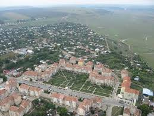
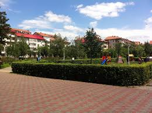
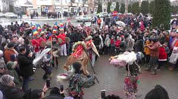
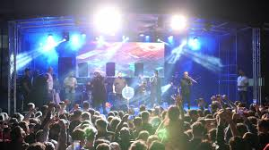
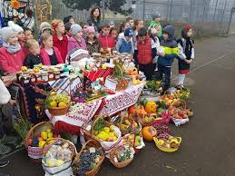

Bine ai venit în Podu Iloaiei! Un oraș mic, dar plin de farmec, tradiții și oameni primitori.





Podu Iloaiei este situat în județul Iași, în nord-estul României, și are o istorie bogată. A fost atestat documentar în secolul al XVII-lea și este strâns legat de drumurile comerciale din Moldova.
În secolul al XIX-lea, dezvoltarea căii ferate a transformat orașul într-un punct strategic pentru transport și comerț. În perioada interbelică, orașul a cunoscut o creștere economică semnificativă.
După 1989, orașul a intrat într-un proces de modernizare, păstrându-și însă tradițiile și identitatea culturală specifică zonei Moldovei.
Populația orașului Podu Iloaiei este de aproximativ 10.000 de locuitori. Majoritatea sunt români, iar o parte sunt de etnie romă.
Localitatea are un caracter predominant rural-urban, cu o densitate scăzută și o populație stabilă. Nivelul de educație este mediu, iar economia se bazează pe agricultură și mici afaceri locale.
Un scurt video care surprinde atmosfera sărbătorilor tradiționale din oraș:
Telefon Primărie: 0232 123 456
Email: contact@primaria-poduiloaiei.ro